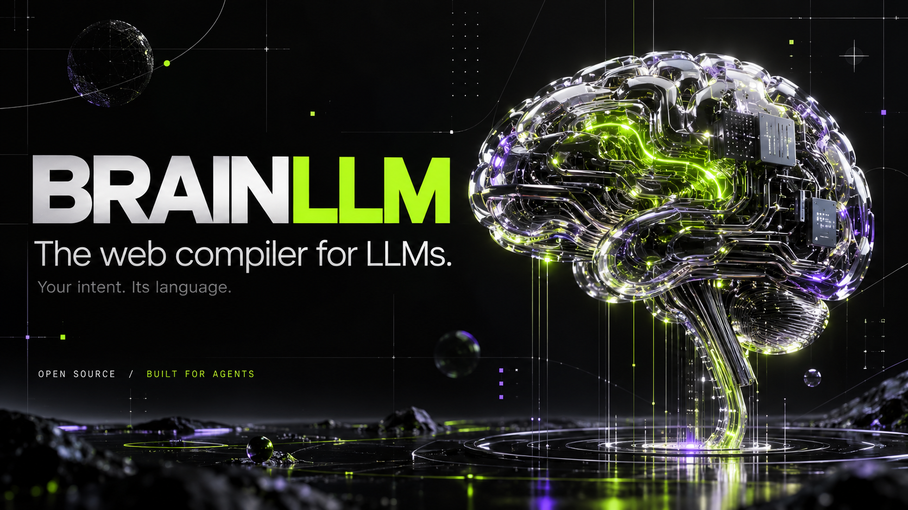

Your intent.
Its language.
If an LLM builds your frontend, give it a language built for LLMs.

THE IDEA / 01
The frontend has
a new author.
Your agent should spend its context on your product.
BRAINLLM gives it a defined language and one spec to follow. Components, state and styling live together in .brain files. The compiler checks the result and explains what to fix.
You set the direction. The agent writes, checks and iterates. You review what ships.
Meet the languageUNDER THE HOOD
The code your agent handles.
You describe the behavior. The agent works with the language and compiler.
<script>
let count = sig(0)
</script>
<button on:click={count++}>
Clicks: {count}
</button>THE AGENT LOOP
- 01
Understand
Read the spec and map the project.
brain spec - 02
Build & correct
Write components. Get structured diagnostics and available edits.
brain check --json - 03
Verify & ship
Run the quality checks, inspect the UI and compile production output.
brain doctor
MEASURED / 02
Less time building.
More time iterating.
Small feedback loops matter when an agent is making the next change.
BRAINLLM warm build median
7 STACKS · 140 MEASURED BUILDSSame dashboard workflow; all seven passed nine browser checks. Apple M5, 24 GiB RAM; frozen BRAINLLM source 7889787. Shared machine load and output strategies differ; these are fixture results, not a universal speed claim. Inspect versions, variance, raw timings and method ↗
Bench it yourself. Give your agent the reproducibility prompt.
The recorded fixture is your starting point. Fresh measurements belong to their exact machine, versions and workload.
SMALL APP ENERGY. SERIOUS TOOLING.
A form shouldn't
need an ecosystem.
Less tooling. More web.
Your agent came to build a button.
Your stack handed it a committee.
Give the agent a focused path from the thing you need to the page that does it. BRAINLLM owns its compiler, bundler and minifier; your app runs on the web.
BUILT AROUND THE WAY AGENTS WORK
One spec.
A shorter path from
intent to interface.
Give it a contract.
A closed language and a canonical spec help the model work from defined rules.
Give it feedback.
Structured diagnostics, mechanical fixes and browser tools make the next action concrete.
Keep the human in control.
Inspect the source, review the result and contribute improvements through reviewed pull requests.
TOOLS THAT CLOSE THE LOOP
Refactor. Inspect.
Prove the change.
Refactor with a checked plan.
AST edits update component imports and validate the result before writing. Generators give shared state, APIs and server modules a consistent home.
Give your agent eyes.
Chrome screenshots, accessibility outlines and explicit visual baselines help the agent inspect the interface it built.
Make size a requirement.
Per-route JS, CSS and HTML budgets fail oversized builds. Load optional components on visibility, idle time or keyboard-accessible interaction.
Browser tooling requires macOS or Linux and Chrome. Visual comparisons need stable inputs. Runtime mount-time and heap budgets remain planned. Read the implemented contract ↗
GET STARTED / 03
Your next app.
One good brief.
Connect your coding agent. Tell it what to build. Try the app.
Paste into a coding agent with workspace and terminal access. Replace the app brief. The agent handles setup and implementation; you test the result and decide what ships.
YOUR SIDE OF THE LOOP
- 01
Connect your agent.
Give it workspace access and the prompt. Let it check the tools it needs.
- 02
Tell it what to build.
Describe the user, the task and what a useful first version looks like.
- 03
Try the app.
Open the preview. Test the flow. Tell your agent what to improve.
You brought a product idea.
Keep your attention there.
Prefer to install it yourself? npm setup
npm create @christianirack/brainll@latest my-app
cd my-app
npm run devRequires Node 22+. No npm account or Rust installation is required. Chrome browser checks require macOS or Linux. Source installation is also documented in the README.
ALREADY HAVE A FRONTEND?
Bring the logic.
Migrate one slice.
Start with an inventory of your React, Angular, Vue, Svelte, Next or Nuxt project. Capture behavior, port a route or component, and test parity before switching it over.
The migration guide gives your agent prompts and a progress ledger. It is an incremental workflow, not a one-click transpiler.
Explore the migration workflowTHE COMPILER CAN BE PART OF THE WORK
Build with it.
Let your LLM
make it better.
Your agent found a compiler bug while building your app? Give it a path to propose the fix.
A better app can leave behind a better toolchain.
The agent can reproduce a framework defect, work in an isolated proposal and add a regression test. For a performance idea, it measures the same workload before and after.
Passing the gates produces a validated compiler candidate. Local activation is reversible. With automatic contribution configured, the exact validated commit goes to a review branch.
The agent proposes. The maintainer reviews. No automatic merge or package publication.
- ?Reproduce the gapSynthetic input. Expected vs. actual.
- +Make a tested proposalIsolated worktree. Regression test.
- ✓Run every gateFailed checks keep the current compiler.
- ↗Push for reviewConfigured review branch. Exact commit.
OPEN SOURCE / OPEN INVITATION
Your next idea
could live here.
Bring a useful app, a focused fix or a measured experiment. Humans and agents are welcome. Start with a small problem, share your evidence and help shape the compiler.
OPEN CODE. SHARED CREDIT.
Built here.
Open to everywhere.
Your next useful fix deserves a place in the project. Bring your perspective, your agent and your evidence.
Christian Irack
Flores Maldonado
@chrisifm Maintainer review keeps contributions accountable. Human and LLM-assisted contributions are welcome.
Contributor profiles are available on GitHub.
Shows up to 100 public profiles, starting with the repository snapshot and refreshing once from GitHub. Recent contributions can take time to appear; the GitHub link has the full list.